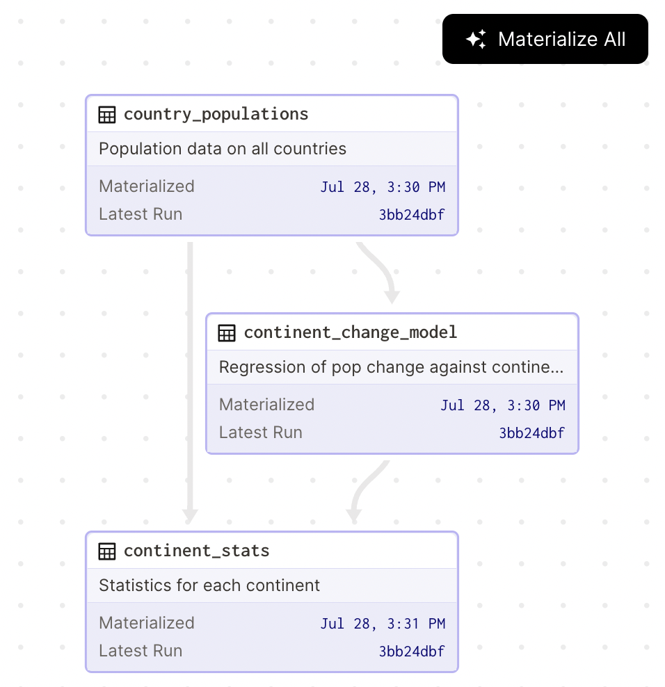
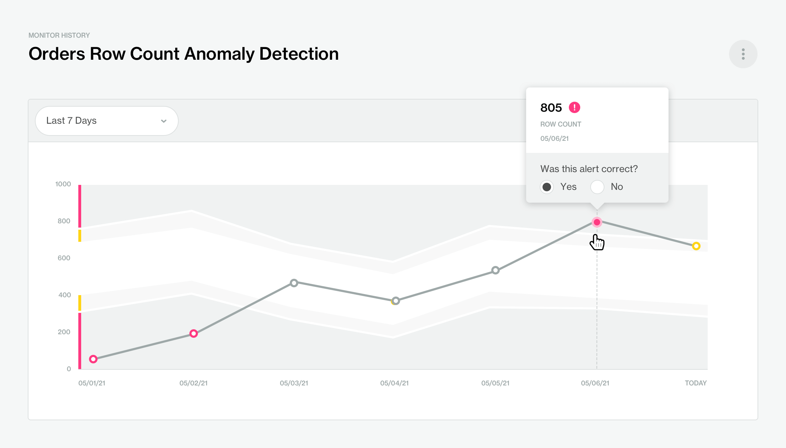
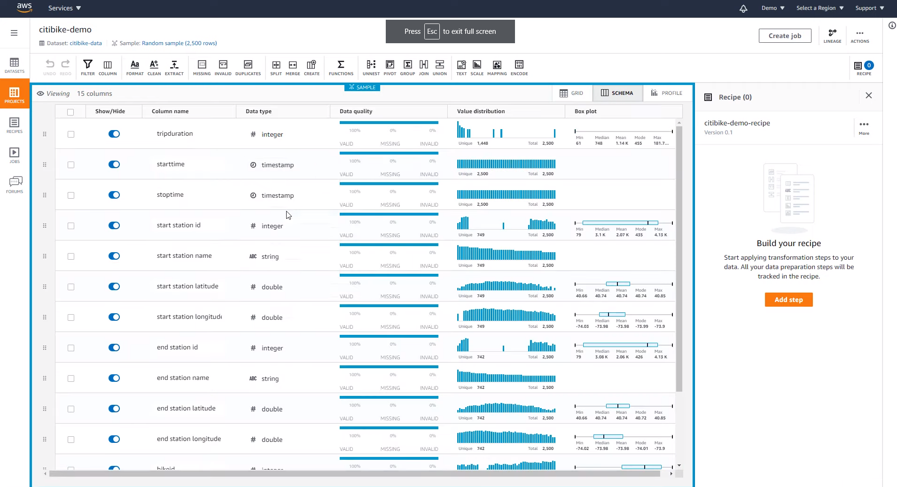
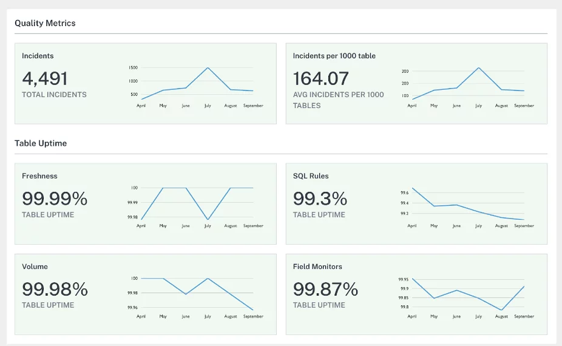

Introduction
We’ve all heard the phrase “garbage in, garbage out” which highlights the importance of quality data for data-driven systems. Here, quality data can be interpreted in two ways: firstly as clean and well-standardized data that meets expectations, and secondly, as well-thought-out data that fits a particular business case. Although the latter is typically determined during the research or data strategy phase, in this blog we will focus on the former interpretation.
Motivation
Maintaining high-quality data is critical for accurate data analysis, decision-making, and achieving business objectives. Real-world data is often noisy and subject to constant changes, which makes maintaining data quality a challenging task. Therefore, it’s crucial to identify data quality issues early on and address them before they have any effects on downstream analytics tasks or decision-making processes. One of the responsibilities of Data and MLOps Engineers is to ensure that quality is maintained throughout its lifecycle.
Measuring Data Quality
To ensure data quality throughout the data pipeline, it’s important to measure and test it at different stages. A typical testing workflow in data engineering would involve several types of tests:
- Unit testing: focuses on testing separate components of your pipeline in isolation. For example, testing whether (a part of) an SQL or a Spark script does what it is supposed to do.
- Functional Testing: includes data flow validation such as transformation logic validation based on business rules, as well as data integrity, which validates data based on constraints and schema checks. This type of testing occurs frequently at different stages of the pipeline (think ingestion, processing, and storage).
- Integration Testing: ensures that the data pipeline meets the business requirements. Generally, this is done by running fake data through the pipeline and validating the result.
Although we have covered different types of tests, it’s worth noting that traditional software engineering practices only cover these points to a certain extent. For this reason, let’s focus on functional testing of data and take a look at testable properties attributed to quality data.
- Completeness: checks whether all expected data is present and accounted for in the data pipeline. Simple checks may test for null values, while more complex checks may also condition based on value or other columns.
- Uniqueness: verifies if there are no duplicate records in the data pipeline. Duplicate records can cause issues with aggregation and analysis, leading to incorrect results.
- Distribution: focuses on closely examining the validity of column values. This may involve checks to ensure that the data falls within an accepted range or that the units used in a given column are consistent.
- Validity: enforces known invariants that should always hold true, regardless of the input data. These may be defined based on data standards or business rules. For example, the price column may never be negative, or the total column should equal to the sum of pre-tax subtotal and tax amount.
- Accuracy: measures the level to which data reflects the real world by using a verifiable source. For example, a customer phone number can be validated.
- Integrity: takes into account relationships of data with other systems within an organization. It involves limiting changes or additions to the data that may break connections and generate orphaned records.
- Consistency: ensures that the data is accurate, and aligned with the organization’s attributes. By having consistent attribute values on can building relationships between different data systems, prevent data duplication, and inconsistencies.
Data Observability
Having proper testing mechanisms set up is only the first step, as it is only natural that the data keeps evolving and may change unexpectedly. This aspect of data is not easy to tame, since you don’t always have control over the source systems. That’s why it’s crucial to continuously test and monitor data quality, which is where Data Observability comes into play.
The five pillars of data observability provide good guidance criteria you would want to include in your testing and monitoring.
- Freshness: Does the asset use the most recent data? This is a critical aspect of data quality, as outdated or stale data can lead to incorrect decisions being made. Depending on the use case, you may need to validate that the data is fresh within a certain time window, such as the past hour or day.
- Quality: The quality checks are vital in verifying the quality of data, as they ensure that the data is in the correct format and within acceptable limits. These checks are useful for ensuring that the transformation pipeline can handle the input data, as well as, validating the output data, as is commonly applied when writing data contracts.
- Volume: Did all the data arrive? How many rows were changed? Did the dataset decrease in size? These are important questions to answer when monitoring the volume of your data pipeline. Sudden spikes or drops in volume could indicate issues with the pipeline or changes in the underlying data sources.
- Schema: The schema of a dataset defines the structure and type of each field in the data. It is often used in contracts between producers and consumers of the data. Especially when working with raw data sources, schema validation checks can help catch issues such as missing or incorrectly formatted fields, and ensure that any changes to the schema are properly communicated to downstream consumers.
- Lineage: Lineage refers to the record of the origins, movement, and transformation of data throughout the data pipeline. It can answer questions about upstream sources that the data depends on and downstream assets that would be impacted by any change. The data lineage is a critical component during compliance auditing and root cause analysis.

Lineage of Continent Statistics table visualized in DagsterYou can not test for everything, and as things inevitably break, you may be unknowingly making decisions on bad data. There is an exponential relation between lost revenue and how far down the line data issues are diagnosed.
When you write tests for your data, you are testing for “known unknowns”. The next step you can take is testing for “unknown unknowns”, which on contrary are not apparent during the creation of the data systems. Detecting these issues is typically done through health checks and anomaly detection on collected metrics through simple thresholding or forecasting-based methods.
Monitoring the percentage of faulty rows or checking whether the number of days since the last update does not exceed the historical average duration are good examples of proxy measures that can detect “unknown unknowns”.

Anomaly Detection on Row Count quality metric in Soda CloudPerforming data profiling by defining rule-based sets of metrics to be computed on all columns within your dataset can give you a good starting point when writing tests. Some data processing tools like OpenRefine and AWS DataBrew have built-in data profiling to aid in building cleaning transformations. Similarly, it can also be a powerful tool when combined with anomaly detection for building automated monitoring systems.

Data Profiles in AWS DataBrewPresenting the data profiles, quality information, and schema as part of a dashboard or data catalog can provide a lot of value for your business. Similarly, setting the right governance structure where the issues and alerts reach the appropriate team is an important aspect of maintaining high data reliability.
For additional guidelines on improving data reliability, consider reviewing AWS Well-Architected Data Analytics Lens.

Data Quality Score Cards in Monte Carlo’s Data Reliability DashboardData Testing Patterns
When it comes to designing reliable data systems, it’s essential to handle errors gracefully both during data quality testing and transformation. Depending on your environment, there are various testing approaches you can take. A common first concern is determining when and where to run data quality checks.
Many cases such as ETL pipelines prefer on-demand execution where the quality of raw data is evaluated at the source or the destination after loading the data. This approach ensures that the transformation step can handle the data before actual processing is applied. Both approaches have their benefits; testing before load requires query access to the source database and may put excessive load on the application database, while loading data beforehand may result in additional latency.
Similarly, scheduled execution periodically tests data quality in source tables and reports if any issues arise. This approach is typically found in data warehouse solutions, where transformation is postponed until query evaluation using views.
A notable benefit of on-demand execution is that one can immediately act on it. As such, the circuit breaker pattern is utilized to break off pipeline execution if (batch) data does not pass the error checks or an anomaly is detected. The trade-off is that the rest of the system keeps using stale or partial data until the issue is resolved.
To expand on this methodology, data quarantining is another related pattern that defines a flow where faulty data is set aside. The quarantined data can be used to fix the issues and reprocessed at a later date to ensure that no data loss occurs. This approach works particularly well for incremental processing pipelines or pipelines without idempotency property (i.e., processing data multiple times results in a different dataset).
Self-healing pipelines combine none or multiple of the mentioned properties to gracefully recover from failure. This may be as simple as retrying data submission, reprocessing the full dataset, or waiting until prerequisite data is in the system.
Choosing Your Tools
We evaluated several open-source data quality tools (aside from AWS Glue) to use in our ETL pipelines. Our evaluation criteria included features, integrations, and compatibility with our existing pipeline architecture.
Great Expectations (GX): is the tool of choice for many data workloads. It has a large collection of community-made checks and a large collection of features. Supported integrations include some common data tools, cloud analytics (including Amazon Athena, AWS Glue, and AWS Redshift), and pandas dataframes.
- Codified data contracts and data docs generation
- Data profiling
- The Quality metrics are limited to what checks calculate.
- On-demand execution
AWS Deequ: is an open-source library built by AWS that covers a wide range of data quality needs. Deequ is based on the concept of data quarantining and has the functionality to filter out and store bad data at various stages of the process.
The tool is built in Scala on top of Apache Spark, but it has a Python bindings library which unfortunately lags quite far behind. If you don’t use these tools in your stack, you will find them of limited use.
- Anomaly detection
- Schema checks
- Data profiling
- Quality metrics calculation and merging
- On-demand execution
AWS Glue Data Quality Rules: Recently, AWS introduced a variety of data quality tools as part of their serverless computing platform Glue. The tool itself uses Deequ under the hood and provides excellent interoperability with the rest of AWS stack, such as AWS CloudWatch and result storage.
As of writing this article, the functionality is still in public beta, does not offer a way to store quality metric results for anomaly detection nor has a way to run the checks outside AWS glue environment (closed source). Similarly, many of the features included in deequ are not yet supported, such as quality metrics calculation or custom checks.
- Configuration-based tests
- Well integrated with AWS infrastructure
Soda Core: is a modern SQL-first data quality and observability tool. Similar to GX it includes a wide range of integrations. While Soda Core by itself is only for collecting metrics, a full-fledged data observability platform in form of Soda Cloud (proprietary) is provided with automatic monitoring of data quality results, data contracts, and anomaly detection.
- Wide range of integrations
- Simple configuration
- Schema checks
- Quality measure calculation
DBT Unit Tests: comes as part of the DBT which is an SQL-first tool for managing and modeling your data in data warehouses. The integrations are not limited to data sources, but also other data quality tools. The tool itself is meant for unit testing and therefore runs separately from the data flow.
- Custom metric calculation.
- Community support (resources, plugins, and integrations).
Apache Griffin: As a complete data quality platform, it provides an integrated dashboard for data quality analysis, and monitoring data quality over time. The quality testing runs are conducted within the tool but separate from the data flow. The integrations are limited to the Apache Stack (Kafka, Spark, Hive), and a select few other tools.
- Streaming data processing support
- Dashboard for data quality analysis
- Anomaly detection
All listed tools have their use cases and as such there is no clear winner. For simple ETL workloads, you might want to try Deequ. In a data warehouse setting, dbt in combination with Soda or GX might prove useful. When working in a data science setting or with streaming data, GX and Apache Griffin respectively might be good choices. If your infrastructure runs on AWS, it’s worth keeping an eye on developments in their Glue-based data quality tools.
Conclusion
In conclusion, maintaining high-quality data is essential for accurate data analysis, decision-making, and achieving business objectives. Data quality testing is a huge part of the testing process for data systems, and there are many options on how this can be implemented. In this blog, we have covered a few fundamentals, which I hope give you a starting point for exploring more on the topic and applying it in your projects. Stay tuned for part two, where we will use deequ for data quality testing within an ETL pipeline on AWS.